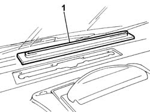
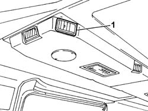

5010C12 WINDSCREEN DEMISING VENT - R.R.
- Path
- Procedures > 50 AUXILIARY UNITS > 5010 HEATING/VENTILATION - MISCELLANEOUS > 5010C AIR OUTLET AND DIFFUSERS > 5010C12 WINDSCREEN DEMISING VENT - R.R.
- Kind
- repair procedure (removal / refitting; the operation number is the code)
- Applies to
- all engines; all production periods
- Interactive page
- https://sloeber94.github.io/elrnDB-fDct/en/#/244001230
Applies to: all engines; all production periods
 Removing
Removing
 Refitting
Refitting1. Using a suitable tool, release the windscreen demisting diffuser and remove it.

Applies to: all engines; all production periods; only with equipment: Supplementary air conditioner
Removing
Refitting1. Prise up the outlet using a suitable tool and remove.

Applies to: all engines; all production periods
Refitting
Removing- Position the windscreen demisting diffuser in its housing and check that it is properly secured.
Applies to: all engines; all production periods; only with equipment: Supplementary air conditioner
Refitting
Removing- Fit the outlet in its seat and press until it clicks into place.
Topics that link to this page (17)
- 5010B24 UNDER-FACIA AIR DUCTS R R
- 5020A10 HEATER BOX - R+R
- 5040A80 EXPANSION/CONNECTION PIPE - R R
- 5040B22 AIR CONDITIONING SYSTEM DE-MISTER THERMOSTAT - R+R
- 5040B30 EXPANSION VALVE (TUBE ORIFICE) - R+R
- 5040C10 AIR CONDITIONER CONTROL SUPPORT - R+R
- 5040C30 FAN MOTOR - R+R
- 5040C50 AIR CONDITIONER HEATER RADIATOR - R+R
- 5040C56 CONNECTING PIPE BETWEEN TAP AND AIR CONDITIONING HEATER RADIATOR - R.R.
- 5040C58 AIR CONDITIONING HEATER RADIATOR TAP - R.R.
- 5040C64 A/C MANUAL CONTROL SWITCH (ONE) - R+R
- 5040D10 AIR CONDITIONER CONTROL SUPPORT - R+R
- 5040D47 AIR DISTRBUTION FLAP - AIR INTAKE/RECIRCULATION - TAP TRANSMISSION - R.R.
- 5505C31 UNDER-FACIA WIRING - R R
- 7040A10 L/H OR R/H FRONT SEAT (ONE) - R+R
- 7040A97 FACIA TRIM SUPPORT BEAM - R R
- 7040L17 PASSENGER COMPARTMENT FLOOR FRONT CARPET - R R